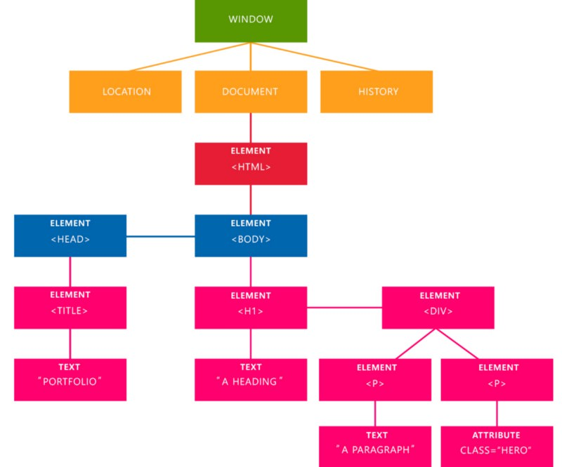

Entendendo o DOM (Document Object Model)
Você estudou bastante HTML, criou suas primeiras tags, aprendeu CSS, fez formulários bonitos, botões incríveis, páginas responsivas e começou mostrar para todo mundo como aquilo é incrível, mas chega uma hora que você deseja dar um passo a mais no seu aprendizado e se pergunta: ”Mas como eu posso dar movimento a minha página? Queria tanto que aquele botão por exemplo mudasse algo nela!”. É aí que entra o DOM, algo que constantemente você ouve falar por aí, mas não sabe explicar ao certo o que é.
Sabe aquelas animações legais que você vê por aí e você fala “Uau, queria tanto fazer algo assim, mas como?”, elas são feitas manipulando o DOM (Document Object Model), e esse artigo vai te explicar do zero o que ele é e como manipulá-lo.
Então, o que é o DOM?
O DOM (Document Object Model) é uma interface que representa como os documentos HTML e XML são lidos pelo seu browser. Após o browser ler seu documento HTML, ele cria um objeto que faz uma representação estruturada do seu documento e define meios de como essa estrutura pode ser acessada. Nós podemos acessar e manipular o DOM com JavaScript, é a forma mais fácil e usada.
Quais as vantagens do DOM?
Com ele você tem infinitas possibilidades, você pode criar aplicações que atualizam os dados da página sem que seja necessário uma atualização. Pode também criar aplicações que são customizáveis pelo usuário, mudar o layout da página sem que seja necessário atualização. Arrastar, mover, excluir elementos. Ou seja, você tem infinitas possibilidades, milhares de coisas que você pode fazer manipulando o DOM, basta você usar sua criatividade.
Como ele é representado pelo browser:

A estrutura que o DOM constrói a partir da leitura do seu documento HTML.
Nessa imagem vemos a estrutura do DOM, suas marcações e como ele é montado pelo browser. Nessa base, temos 4 pontos importantes que você vai ver bastante daqui pra frente:
- Document:que como o nome diz, cuida de documentos HTML.
- Elements: são todas as tags que estão em arquivos HTML ou XML se transformam em elementos da árvore DOM.
- Texts: É o texto que vai entre os elementos. Todo o conteúdo das tags.
- Attributes: É a junção de todos atributos para um nó específico. No caso, o attribute class=”hero” está apontando para o elemento.
| Métodos | Events | Percorrer elementos | Elements |
|---|---|---|---|
| getElementById() | click | .childNodes | .parentNode |
| getElementsByClassName() | select | .firstChild | .firstElementChild |
| getElementsByTagName() | .nodeName | .lastElementChild | |
| querySelector() | .nodeValue | ||
| querySelectorAll() | .nodeType |